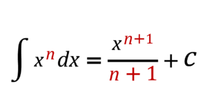

The formula below tells you how to integrate any power of x (except x-1)

In a nutshell this says:
To integrate a power of x: (i) increased the power by one - then divide it by it, and (ii) stick a constant on the end.
1. For 'normal' powers ∫x3dx=x4∣ 4 + C
2. For negative powers ∫ 1∣ x3 dx = ∫ x-3 dx = =x-2∣ -2 + C = = -1∣ 2x2 + C
3. For fractional powers ∫∛x4 dx = =∫x4∣ x3 dx= =x7∣3∣ 7∣3 + C= =3∛x7∣7 + C
4. And for complicated looking stuff... ∫ (3x2 − 2 ∣ √2 +7∣ x2) dx =∫(3x2 − 2x-1∣2 + 7x-2) dx =3x3∣ 3 −2x1∣2∣ 1∣ 2 + 7x -1∣-1 + C = =x3 − 4√x −7∣x + C
You can print out this page and use it when you are on public transport. It is a good way to revise integration rules and it make your journey mathematically useful 😀